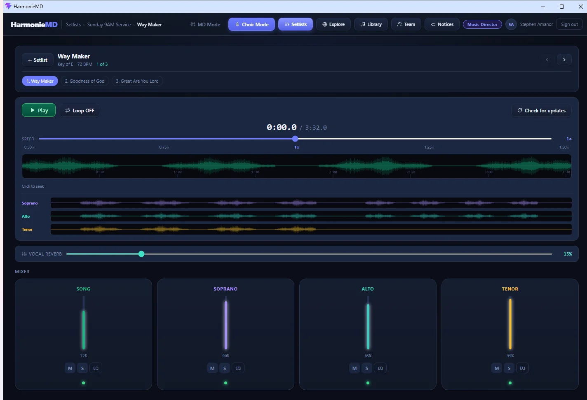
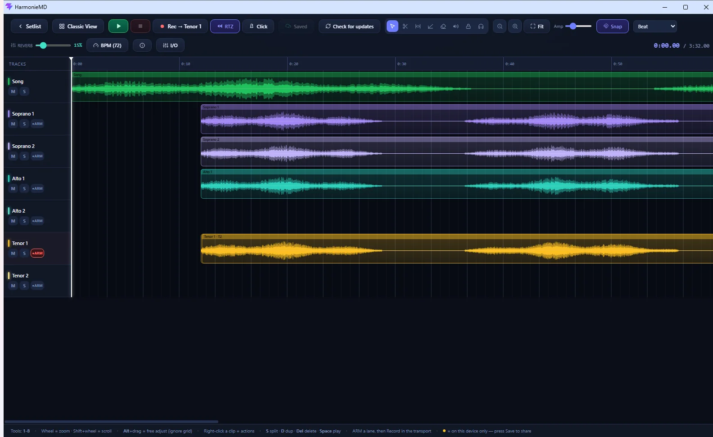
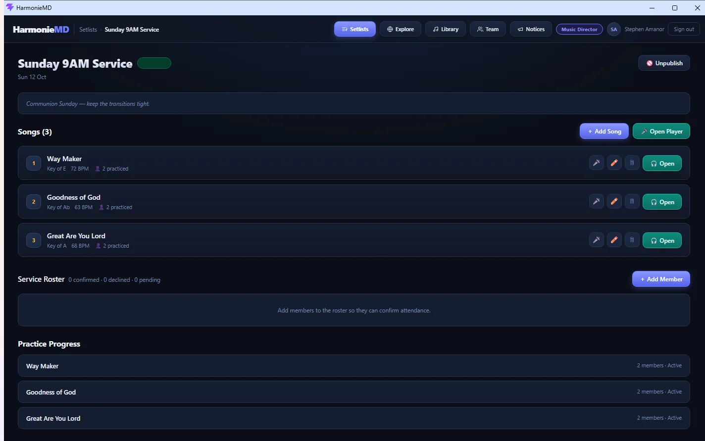
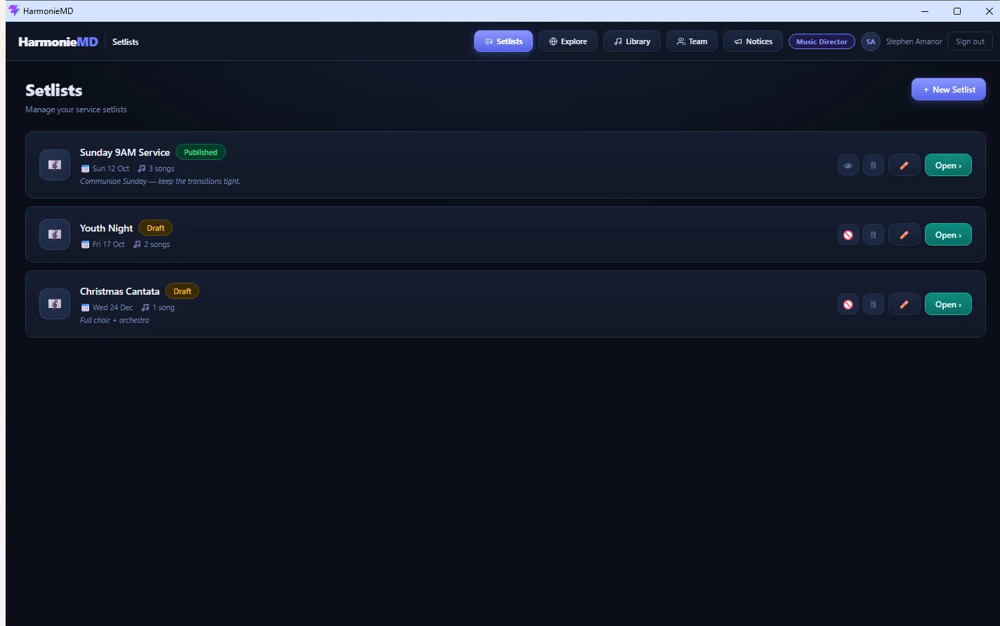
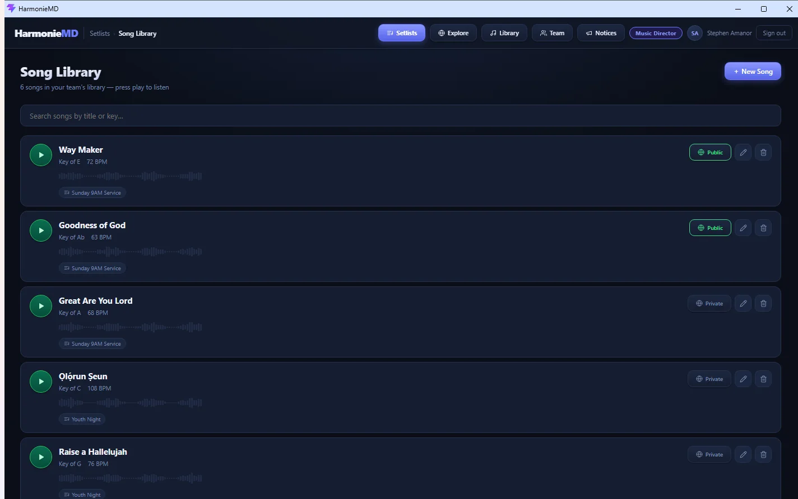
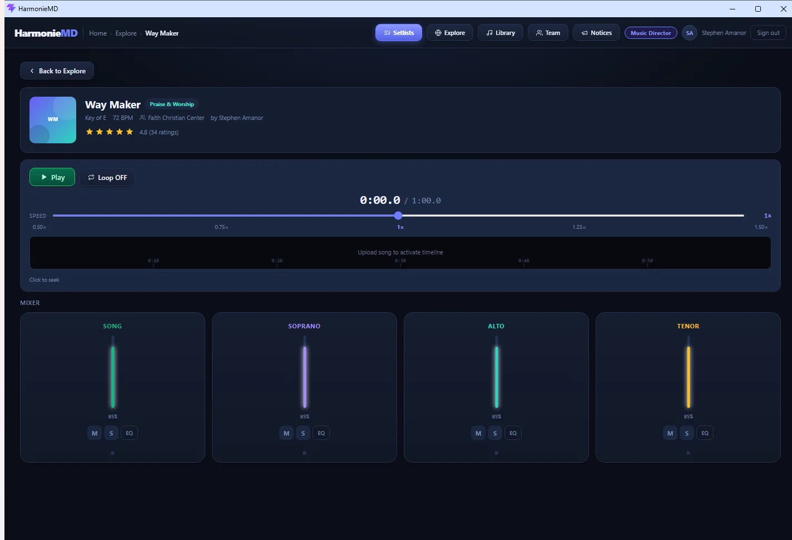
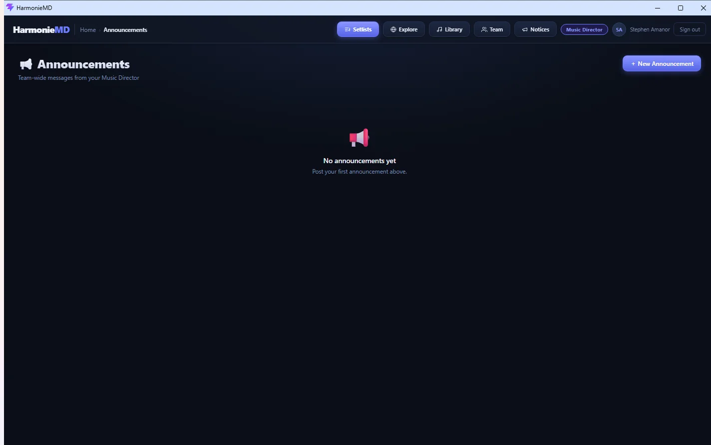

Every singer gets their own harmony track: soloed, slowed down, loopable. The rehearsal hour goes to worship instead of teaching notes.
Windows. Works offline. Free for teams up to 5.

A voice note has no isolation. A YouTube link has no parts. A Drive folder has no structure. And nobody's installing a DAW. HarmonieMD is built for exactly this gap.
Solo your part. Lower the rest. Slow it to 85% without changing pitch. Loop the bar you keep missing. Add a little reverb so it feels like the room. No manual required.
Same song, different surface: MD Mode is a genuine multi-track editor. Soprano 1 and 2, Alto 1 and 2, Tenor 1 and 2, plus the song, with sample-accurate overdubs and non-destructive takes.

Setlists publish to the whole team, every song carries its key and tempo, and one tap marks a song practised. The guessing ends.

Most apps estimate your computer's audio delay. HarmonieMD measures it, playing test tones and listening back through the mic, the way professional studios calibrate.
Re-record a phrase as many times as you like. Every take is kept; switch back to take two with one click.
Songs download to the device once. After that, rehearsal doesn't depend on the church network, or any network.
Add songs, assign leaders, publish to your team.
Upload each harmony, or record them in the built-in studio.
Each singer solos their part, slows it down, loops it.
You can see who practised before rehearsal starts.




| Voice notes | Shared Drive | A real DAW | HarmonieMD | |
|---|---|---|---|---|
| Isolate one part | No | No | Yes | Yes |
| Built around SATB | No | No | No | Yes |
| Usable by a volunteer | Yes | Yes | No | Yes |
| Slow down and loop | No | No | Yes | Yes |
| Record in sync | No | No | Yes | Yes |
| See who practised | No | No | No | Yes |
| Works offline | Yes | No | Yes | Yes |
| Shared arrangement library | No | No | No | Yes |
Every plan includes the full studio. You're only paying for seats. Members join free with your team code.
Free
$0
Up to 5 members
Pro
$29 /month
Up to 15 members
Team
$49 /month
Up to 30 members
Cancel any time. Existing members are never removed if you downgrade.
Free for teams up to five. Nothing to lose but the first forty minutes of rehearsal.